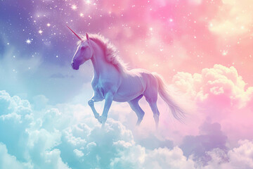

LIGHT UNICORN
Light Unicorn have unique bioluminescent fur that changes color based on the surrounding light and atmospheric conditions. This ability allows them to blend into their surroundings during the day and emits a soft, guiding glow at night, aiding in navigation and communication among their kind.
- Scientific Name: Equus Luminae
- Average Height: 7 to 8 feet tall
- Average Lifespan: 800 to 1,000 years
- Favorite Food: Silver Leaf Grass
A luminous creature embodying the light of the moon and stars. Standing 7 to 8 feet tall, with a shimmering coat, it moves gracefully through enchanted forests. Its crystal horn and iridescent mane add to its magical aura. Nourished by silver leaf grass and stardust berries, Equus luminae lives for centuries, guiding travelers and protecting nature with its gentle, mystical presence.